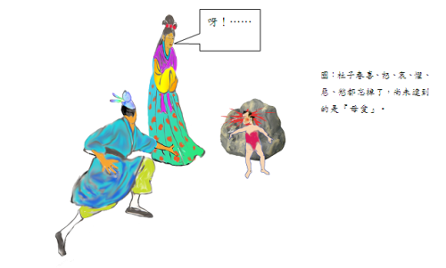

杜子春 江銘輝譯
敗光家產
杜子春是北周至隋朝年間的人。少年時，志向悠閒放蕩，喜歡飲酒作樂，不事生產，不久就喪盡家財，非常落魄。於是投奔親友，但親友都認為他遊手好閒，不努力工作，不歡迎他。某年冬天來臨。他穿著破舊衣服，餓著肚子，排迴在長安街上，說真的，他晚飯沒有吃，內心徬徨不知到要去那裡。到了東邊市場的西門，更顯露出饑寒交迫的臉色，他抬頭向天長嘆。
奇異老人
一位老人拄住著拐杖站在前面，問說：「你為何嘆息？」 杜子春便說出心事，並且憤怒親戚的寡義薄情，激動的情緒，表現在臉上。老人說：「要多少緡才夠用呢？（緡：成串的銅錢，一千錢稱緡）」杜子春說︰「三、五萬緡就可以維持生活了。」老人說︰「不夠吧。」杜子春改變說：「十萬。」老人說︰「還不夠！」杜子春於是說︰「一百萬。」老人還說不夠，杜子春說︰「三百萬。」老人說︰「差不多。」於是從袖子裡掏出一緡錢，說︰「先給你今晚使用，明天中午我在西街的波斯府宅等你，你可別來晚了啊！」
第一次資助
第二天中午杜子春如期前往，老人果然給了他三百萬緡，沒留下姓名就走了。杜子春有了這麼多錢，又放蕩起來，自己認為有這麼多錢，一生不會再流落他鄉了。從此他乘肥美的馬匹、穿上等輕便的皮裘，每天和酒肉朋友狂飲，叫來樂隊奏樂開心，到娼樓看歌舞，從來不把以後的生計放在心上。一、二年時間內便把老人給他的錢悄悄用光，於是把高貴的衣服和馬車賣掉，換成便宜的，也把馬換成驢，又把驢賣掉徒步，轉眼間又像當初一樣，無法謀生，自己又在東市嘆息。
第二次資助
剛一長嘆，那位老人就出現在面前，拉著他的手說︰「你怎麼又弄到這個地步？真奇怪。沒關係，我還會幫助你，要多少緡？」杜子春羞愧不敢回答。老人再三逼問，杜子春只是感到慚愧罷了！老人說︰「明天中午，你還到從前我約見你的地方。」第二天杜子春滿腔羞愧的去了，得到一千萬緡。杜子春在沒拿到錢之前就決心要奮發向上，從事生產，好好謀生，石崇（西晉大富翁）、猗頓（戰國時大工商業鉅子）和他倆相比，都算一個小角色。但錢一到手，杜子春又變心了，放縱安逸的心情又故態復萌。不到一、二年，又比上次更貧窮。
第三次資助
有一天，他無意中又在老地方遇見了老人，由於太羞愧，他就用手遮著臉閃開。老人一把抓住他的衣服說︰「唉！不用躲？這是最笨的方法。」然後又給了他三千萬，說︰「這次你要還不改過自新，你就永遠接受貧窮吧！」杜子春自語：「我落迫到處流浪，無法謀生，親戚中的富豪人家，沒有人理睬我，唯獨這位老人三次給我钜款，我該怎樣做才對得起他呢？」因此對老人說︰「我得到你這些資助，應該能夠在人世間自已創立事業。我不但今後要自已創立事業，還要周濟天下孤兒寡母，以此來挽回我失去的名譽和教化。我深深感激你老人家對我的恩惠，將來我建立一番事業之後，完全聽命你的指示。」老人說︰「這正是我的心意啊！你有了成就以後，明年七月十五中元節時，在華山老君廟前那兩棵檜樹下等我吧。」 杜子春知道孤兒寡母大多流落在淮南，於是將錢運到揚州，買了一百頃良田，在城中蓋了府宅，在重要的路口建了一百多間房子，召遍孤兒寡母分別住在各住宅裡。賙助甥姪晚輩的婚嫁，遷葬死去親戚，凡是對他有恩的都給以報答，有仇的，也報復了。
華山雲台峰修道
完成了自己的心願後，如期來到了老君廟前，見那老人正在檜樹下悠閒的歌唱。見到杜子春後，就領他登上華山雲台峰。進山四十多里後來到一個地方，見到一幢莊嚴整潔的房舍，不是凡人居住的。彩雲覆蓋在天邊，仙鶴在屋頂上飛翔。屋子的正堂中間有一個九尺多煉丹藥的爐子，爐內紫光閃耀，映亮了窗戶。有九個玉女環繞著爐子侍立著，爐子前有青龍、後有白虎分別看守著。這時天色已逐漸暗了，再看那老人，身上穿的已不是凡間的衣服，而是戴著黃色帽子，穿著道袍的人了。
老人拿了三顆白石丸和一杯酒給了杜子春，叫他趕快吃下。又拿了一張虎皮鋪在屋內的西牆下，要杜子春面向東方坐下，告誡杜子春說︰「你千萬不要出聲。縱使有大神、惡鬼、夜叉或者猛獸、恐怕的地獄緊景象出現，以及你的親屬們被綁著痛苦萬分，這一切都不是真事。你都不要動不要說話，心裡平靜別害怕，最後就不會受到傷害，一心記住我這些話！」
老人說完離開後，杜子春向庭院望去，院子只有一個裝滿了水的大甕罷了！忽然，看見山谷、懸崖佈滿戰旗、到處都是戈矛和盾牌，千軍萬馬大喊嘶叫聲，驚天動地。有一個人自稱大將軍的人，身高一丈多，他和他的馬都披著金色的鎧甲，光芒耀眼。侍衛幾百人，都拿著劍張著弓，直接衝到屋前，大聲呵說︰「你是甚麼人？大將軍到了怎麼不迴避！」左邊和右邊的衛士持劍向前逼問他的姓名，還問他來自何方幹甚麼？他都不吭聲。詢問的衛士大怒，於是爭先恐後的砍殺和射箭的聲音像打雷一般，紛紛擁至！但他竟然仍不出聲。大將軍只好怒氣沖沖地帶著隊伍離開。不久，又來了一群上萬的猛虎、毒龍、獅子、狻猊（傳說中龍生九子之一，形如獅，也有人直接說是西方的獅子）、蝮蛇和毒蠍，爭先恐後地撲向杜子春要撕碎他、吞食他，有的還在他頭頂跳來跳去，杜子春仍是不動聲色。一會兒，牠們都散去了。跟著，突然大雨滂沱，天昏地暗，雷電交加，有大火輪在他左右滾動，他身體的前面和後面不斷有打電和閃光，使人睜不開眼睛。片刻之間，院子水深一丈多，空中雷聲隆隆電光閃閃，來勢洶洶就像山脈的崩塌、河川的裂開，無法抵擋。眨眼之間，湧到到杜子春的坐位前，但他仍是端端正正坐著不理會。
接著那位大將軍又來了，領著一群地獄中的牛頭馬面和面貌猙獰的惡鬼，將盛滿沸水的大鍋放在杜子春面前，鬼怪們手執二叉的長槍，圍繞在四周。傳命說︰「說出你的姓名，就放了你，如果不說，當心用叉把你放在大鍋中！」杜子春又不說話。這時鬼怪們又把他的妻子抓來用力丟在台階下，指著他的妻子向杜子春說︰「說出你的姓名，就放了她。」杜子春還是不回應。於是鬼怪們鞭打他的妻子直到皮破血流，用刀砍她，用箭射她，一會兒煮，一會兒燒，痛到不能忍受。他妻子嚎啕大哭說︰「我雖然又醜又笨，配不上你，但僥倖拿著毛巾、梳子作你的妻子侍奉你十幾年了。現在我被大鬼抓來，我實在不堪折磨受，我不敢指望你向他們跪伏求情，只希望你說一句話，就能保全我的生命了。世上誰沒有情，你仍忍心不出聲嗎？」他妻子邊哭邊喊又咒又罵，杜子春始終不理不睬。大將軍也說︰「你以為我不敢毒害你的老婆！」說著命令取來了銼碓，從腳上開始一寸寸地銼。妻子哭聲越來越快，杜子春全然不看。大將軍說︰「這個傢夥已練成妖術，不能讓他在世上久留！」於是命令左右，把杜子春斬了。把他的魂魄帶著去見閻羅王。閻羅王說︰「這不是雲台峰的那個妖民嗎？給我打入地獄！」於是杜子春被綁在紅燒的銅柱、用鐵棒杖打、碓杵的碓擣撞、磨石的研磨、進火坑、上熱油鍋、上刀山、劍樹，遍嘗地獄所有的酷刑。看起來不能忍受，然而由於牢記著老人的叮囑，竟然都不叫一聲。地獄的鬼卒向閻王報告，說所有的刑罰都用完了。
閻王說︰「這個傢伙陰險惡毒，不該讓他當男人，下輩子讓他做女人罷。」於是讓杜子春投胎轉世到宋州單父縣縣丞王勸的家。轉世為女子的杜子春，生下來就經常生病，針灸吃藥看醫生一天沒斷過，還掉進火裡，摔到床下，始終不出聲。轉眼間已長成了一個容貌絕代的女子，但就是不說話，全家認為她是個啞女。親戚和戲弄的人對她百般調戲侮辱，他總是一聲不吭。縣丞的同縣有個叫盧生的進士，聽說縣丞的女兒容貌很美，就很愛慕，就央求媒人提親。縣丞家藉口是啞女，把媒人推辭了。盧生說︰「妻子只要賢惠就好，不會說話又有甚麼關係呢？正好給那些長舌婦作警戒。」縣丞就答應了。盧生準備六禮，親自引迎娶杜子春為妻。數年之間，感情非常好，生了一個男孩，男孩已經兩歲了，十分聰明。盧生抱著孩子和她說話，她不回應，想盡辦法逗她，也不說話。盧生大怒說︰「古時賈大夫的妻子瞧不起他，始終不笑，但後來妻子看見賈大夫射山雞的本領，都對他欽佩笑了。現在我的地位雖然不如賈大夫，但我的才學會比射山雞不如嗎？你卻不屑跟我說話！大丈夫被妻子瞧不起，還要她的兒子做甚麼！」說著就抓起孩子的兩腿扔了出去，孩子的頭摔在石頭上，立刻頭破， 鮮血濺出好幾步。杜子春愛子心切，一時間忘了老人的吩咐，不覺失聲喊︰「呀！……」聲還沒落息，他發現自己又坐在原來的房間，老道士也在面前。這時已經清晨4點（原文是說5更，中國古代把夜晚分成五個時段，用鼓打更報時，所以叫作五更，從19點開始每2點1更，5更是第二天清晨的3-5點），看見紫色的火焰熊熊往上竄，穿透了屋頂，大火四面竄起，整棟房屋全部燒燬。

從頭開始
老道士說︰「你這個動作把我害得很慘！」就提著杜子春的頭髮扔進水甕中，火立刻就熄滅了。老道士向前說︰「在你的心裡，喜、怒、哀、懼、惡、慾都忘掉了，尚未達到的是『愛』罷了。盧生摔你孩子時若不出聲，我的仙丹就會煉成，你也就成仙了。可嘆啊，仙才真是太難得了！我的仙丹可以再煉，但你卻還得回到人間去，好自為之！」說完給他指向遠方的路，讓他回去。
杜子春之後不好意思的站在燒燬的房屋，看見那煉丹爐已經損壞，當中有根鐵柱，有手臂那麼粗，好幾尺長，老道正脫下衣服，用刀子削那鐵柱。杜子春回到家後，非常悔恨他當初忘了對仙師所發的誓言，想回去再為老道效力以彌補過失。但到雲台峰，甚麼也沒找到，懷著悔恨的心情回來。
《續玄怪錄》杜子春，唐李復言原文
杜子春者，蓋周隋間人。少落拓，不事家產，然以志氣閑曠，縱酒閑遊。資產蕩盡，投於親故，皆以不事事見棄。方冬，衣破腹空，徒行長安中，日晚未食，彷徨不知所往。於東市西門，飢寒之色可掬，仰天長籲。有一老人策杖于前，問曰：“君子何嘆﹖”春言其心，且憤其親戚之疏薄也，感激之氣，發於顏色。老人曰：“幾緡則豐用﹖”子春曰：“三五萬則可以活矣。”老人曰：“未也。”更言之：“十萬。”曰：“未也。”乃言“百萬”。亦曰：“未也。”曰：“三百萬。”乃曰：“可矣。”於是袖出一緡曰：“給子今夕，明日午時，候子于西市波斯邸，慎無後期。”及時子春往，老人果與錢三百萬，不告姓名而去。子春既富，蕩心復熾，自以為終身不復羈旅也。乘肥衣輕，會酒徒，征絲管，歌舞於倡樓，不復以治生為意。一二年間，稍稍而盡，衣服車馬，易貴從賤，去馬而驢，去驢而徒，倏忽如初。既而復無計，自嘆於市門。發聲而老人到，握其手曰：“君復如此，奇哉。吾將復濟子。幾緡方可﹖”子春慚不應。老人因逼之，子春愧謝而已。老人：“明日午時，來前期處。”子春忍愧而往，得錢一千萬。未受之初，憤發，以為從此謀身治生，石季倫﹑猗頓小豎耳。錢既入手，心又翻然，縱適之情，又卻如故。不一二年間，貧過舊日。復遇老人于故處，子春不勝其愧，掩面而走。老人牽裾止之，又曰：“嗟乎拙謀也。”因與三千萬，：“此而不痊，則子貧在膏育矣。”子春曰：“吾落拓邪遊，生涯罄盡，親戚豪族，無相顧者，獨此叟三給我，我何以當之﹖”因謂老人曰：“吾得此，人間之事可以立，孤孀可以衣食，於名教復圓矣。感叟深惠，立事之後，唯叟所使。”老人曰：“吾心也﹗子治生畢，來歲中元，見我於老君雙檜下。”子春以孤孀多寓淮南，遂轉資揚州，買良田百頃，郭中起甲第，要路置邸百餘間，悉召孤孀，分居第中。婚嫁甥侄，遷袱族親，恩者煦之，仇者復之。既畢事，及期而往。老人者方嘯於二檜之陰。遂與登華山雲臺峰。入四十裡餘，見一處，室屋嚴潔，非常人居。彩雲遙覆，驚鶴飛翔其上。有正堂，中有藥爐，高九尺餘，紫焰光發，灼煥窗戶。玉女九人，環爐而立﹔青龍白虎，分據前後。其時日將暮，老人者，不復俗衣，乃黃冠縫帔士也。持白石三丸，酒一卮，遺子春，令速食之訖。取一虎皮，鋪於內西壁，東向而坐，戒曰：“慎勿語。雖尊神惡鬼夜叉，猛獸地獄﹔及君之親屬，為所困縛萬苦，皆非真實。但當不動不語，宜安心莫懼，終無所苦。當一心念吾所言。”言訖而去。子春視庭，唯一巨甕，滿中貯水而已。道士適去，旌旗戈甲，千乘萬騎，遍滿崖谷，呵叱之聲，震動天地。有一人稱大將軍，身長丈餘，人馬皆著金甲，光芒射人。親衛數百人，皆杖劍張弓，直入堂前，呵曰：“汝是何人﹖敢不避大將軍。”左右竦劍而前，逼問姓名，又問作何物，皆不對。問者大怒，摧斬爭射之聲如雷，竟不應。將軍者極怒而去。俄而猛虎毒龍，狻猊獅子，蝮蠍萬計，哮吼拿攫而爭前欲搏噬，或跳過其上，子春神色不動。有頃而散。既而大雨滂澍，雷電晦暝，火輪走其左右，電光掣其前後，目不得開。須臾，庭際水深丈餘，流電吼雷，勢若山川開破，不可制止。瞬息之間，波及坐下，子春端坐不顧。未頃而將軍者復來，引牛頭獄卒，奇貌鬼神，將大鑊湯而置子春前，長槍兩叉，四面周匝，傳命曰：“肯言姓名即放，不肯言，即當心取叉置之鑊中。”又不應。因執其妻來，拽於階下，指曰：“言姓名免之。”又不應。及鞭捶流血，或射或斫，或煮或燒，苦不可忍。其妻號哭曰：“誠為陋拙，有辱君子，然幸得執巾櫛，奉事十餘年矣。今為尊鬼所執，不勝其苦﹗不敢望君匍匐拜乞，但得公一言，即全性命矣。人誰無情，君乃忍惜一言﹖”雨淚庭中，且咒且罵，春終不顧。將軍且曰：“吾不能毒汝妻耶﹗”令取銼碓，從腳寸寸銼之。妻叫哭愈急，竟不顧之。將軍曰：“此賊妖術已成，不可使久在世間。”敕左右斬之。斬訖，魂魄被領見閻羅王。曰：“此乃雲臺峰妖民乎﹖捉付獄中。”於是鎔銅鐵杖﹑碓擣磑磨﹑火坑鑊湯﹑刀山劍樹之苦，無不備嘗。然心念道士之言，亦似可忍，竟不呻吟。獄卒告受罪畢。王：“此人陰賊，不合得作男，宜令作女人。”配生宋州單父縣丞王勸家。生而多病，針灸藥醫，略無停日。亦嘗墜火墮床，痛苦不齊，終不失聲。俄而長大，容色絕代，而口無聲，其家目為啞女。親戚狎者，侮之萬端，終不能對。同鄉有進士盧圭者，聞其容而慕之，因媒氏求焉。其家以啞辭之。盧曰：“苟為妻而賢，何用言矣﹖亦足以戒長舌之婦。”乃許之。盧生備六禮，親迎為妻。數年，恩情甚篤，生一男，僅二歲，聰慧無敵。盧抱兒與之言，不應﹔多方引之，終無辭。盧大怒曰：“昔賈大夫之妻鄙其夫，才不笑，然觀其射雉，尚釋其憾。今吾陋不及賈，而文藝非徒射雉也，而竟不言﹗大丈夫為妻所鄙。安用其子。”乃持兩足，以頭撲于石上，應手而碎，血濺數步。子春愛生於心，忽忘其約，不覺失聲雲：“噫……”噫聲未息，身坐故處，道士者亦在其前。初五更矣，見其紫焰穿屋上，大火起四合，屋室俱焚。道士嘆曰：“錯大誤餘乃如是。”因提其髮發，投水甕中，未頃火息。道士前曰：“吾子之心，喜怒哀懼惡欲皆忘矣，所未臻者愛而已。向使子無噫聲，吾之藥成，子亦上仙矣。嗟乎，仙才之難得也﹗吾藥可重煉，而子之身猶為世界所容矣，勉之哉。”遙指路使歸。子春強登基觀焉，其爐已壞，中有鐵柱，大如臂，長數尺，道士脫衣，以刀子削之。子春既歸，愧其忘誓，復自效以謝其過。行至雲臺峰，絕無人跡，嘆恨而歸。